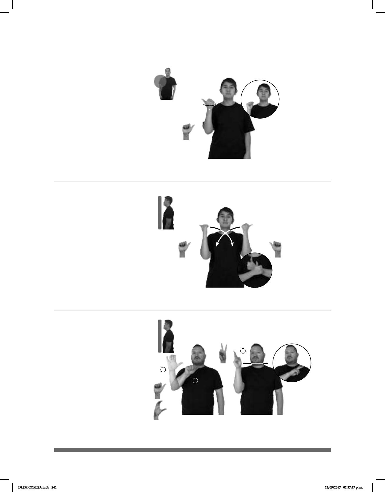

241
(A-25)
(A-26)
AGOSTO CUMPLEAÑOS pos-MI SUEGRO+MUJER
El cumpleaños de mi suegra es en agosto.
JUGUETE pos-MI AHIJADO yo-REGALAR-a-él YA
Le regalé un juguete a mi ahijado.
1
2
3
(A-27)
AUTOBÚS AIRE-ACONDICIONADO HABER
Seña: SM
: A.1
La palma inicia
hacia la izquierda y termina hacia
adentro.
A la altura del cuello.
El antebrazo gira y
cambia la orientación de la mano.
sust. m. Octavo mes
del año que tiene treinta y un días;
sigue a julio y precede a septiem-
bre.
Seña: SS
A.1
Orientación: Palmas hacia adentro.
De los hombros al
pecho.
Las manos cruzan
hacia el centro y llegan a un punto
cercano.
sust. Una persona
respecto de su padrino o su
madrina.
Seña: SC: I.; II y III. SM
I. A.1, II. C.1, III. 2.1
I. y II. Palma hacia afue-
ra; III. Palma hacia la izquierda.
I. y II. A la altura del pe-
cho; III. A la altura de la cara.
I. Recto hacia la derecha;
III. Recto de izquierda a derecha.
III. Labios
soplando.
sust. m. Sistema de
ventilación en el que se tiene control de
la temperatura y de la humedad.
DLSM COMISA.indb 241 25/09/2017 02:37:57 p. m.